1 / 15
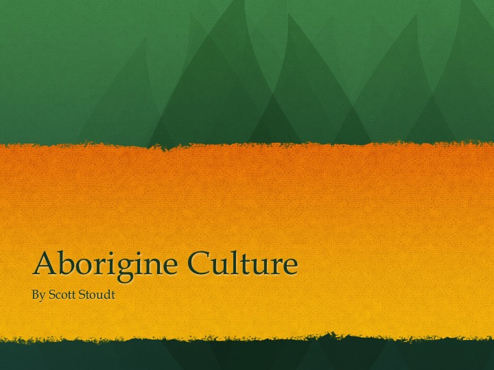
2 / 15
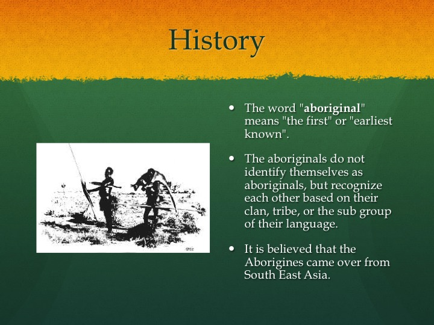
3 / 15
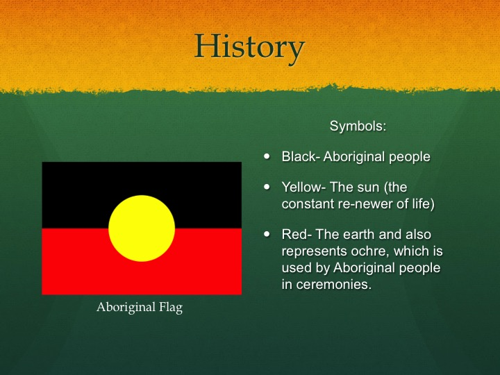
4 / 15
5 / 15
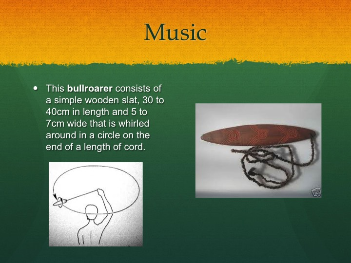
6 / 15
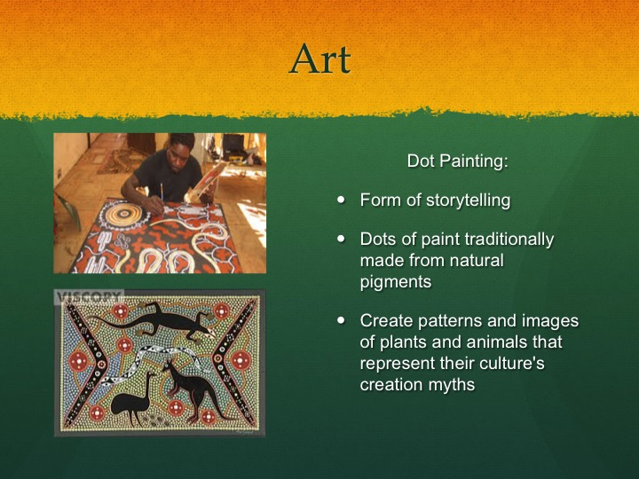
7 / 15
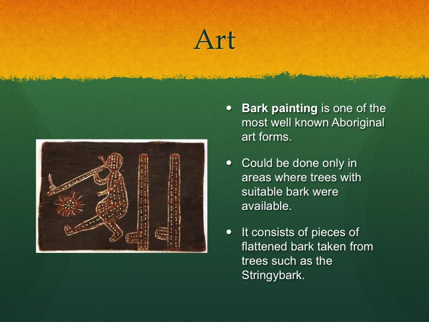
8 / 15
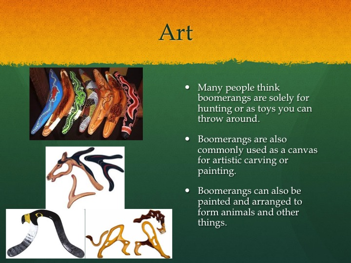
9 / 15
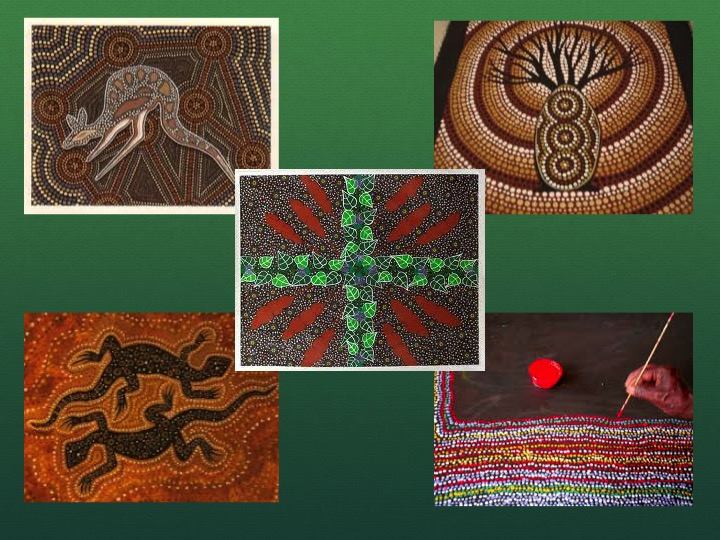
10 / 15
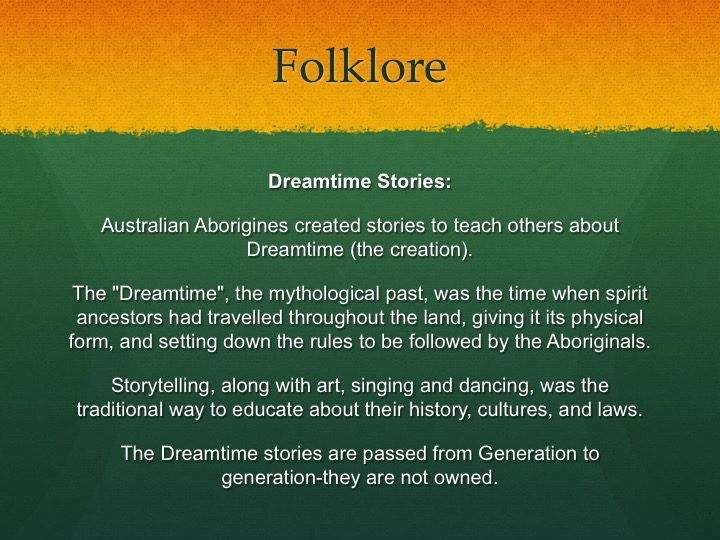
11 / 15
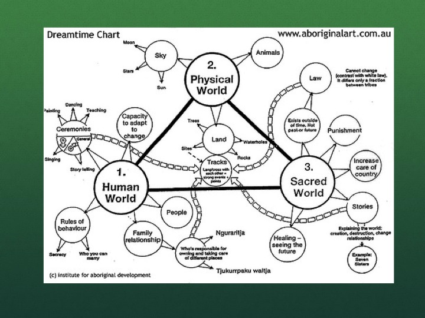
12 / 15
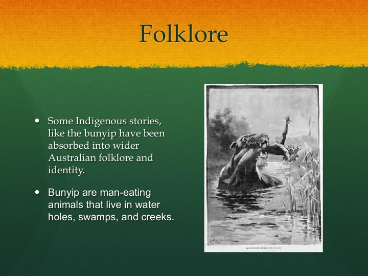
13 / 15

14 / 15
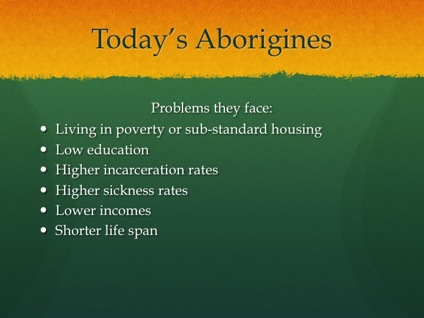
15 / 15
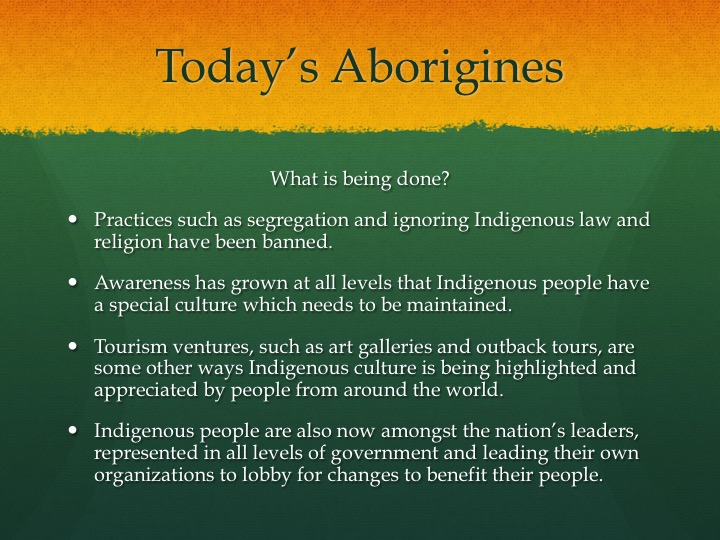
Australian Aborigine Culture
As a part of my trip to Australia with People to People, we were given the task of learning about various topic about the country, its people, and their culture. I chose to learn about the native people of Australia and their unique culture and traditions.